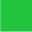

<!DOCTYPE html>
<html>
<head>
<meta charset="utf-8">
<title>Insert title here</title>
	<script type="text/javascript">
		//Random rn=new Random();
		//document.write(Math.random(),"<br>");
		//수학 객체의 랜덤 메소드를 불러 호출할테니 
		//숫자 0~1 사이에있는 랜덤값 하나를 우리한테 반환해줘 0~1
		//document.write(Math.floor(10.200),"<br>");
		//수학 객체에 floor메소드를 호출시 실수값을 전달하면  =10
		//floor메소드가 소수점 첫번쨰자리에서 내림해서 정수값만 전달한다.
		//document.write(Math.ceil(11.123),"<br>");
		//소수점 첫째자리에 올림 처리해준다. =12 
		//수학객체 내부에 존재하는 ceil메소드를 호출시  첫째자리의 1을 올림처리하여 되돌려줌
		//Math.random(Math.random()*(최대-최소+1))+최소
		//document.write(Math.floor(Math.random()*150-120+1))+120
		//document.write(Math.floor(Math.random()*31)+120);
		//난수를 발생시켜 원하는 구간 정수의 값을 구하기
		//선택문을 사용하여 사용자가 입력한 가위, 바위 , 보를 숫자로 변경하고
		//변수 tnum에 저장한다. 만일 사용자가 가위,바위,보 이외에 잘못된 값을 입력했을 경우 
		//alert()이라는 메소드로 잘못 경고를 뛰우고 
		//location.reload()메소드를 호출하여 웹브라우저를 재요청하여 고침기능을 발생시킨다.
		document.write("<h1>컴퓨터가 랜덤으로 내는 가위 바위 보 게임 맞추기 게임</h1>");
		var t= window.prompt("가위 바위 보 중 하나를 입력하세요", "가위");
		//컴퓨터가 임의 내는 가위 바위 보중 하나를 맞추기 위해 웹사이트에 접속한 사용자가 가위바위
		//보중하나를 입력합니다.
		var tnum;//사용자가 입력한 가위,바위,보 라는 문자열을 숫자 1,2,3으로 만들어서 저장시킬 변수
		switch (t) {//사용자가 입력한 가위바위보라는 문자열을 1,2,3, 으로 바꾼다.
			case "가위":
				//tnum=1
				tnum=1;
				break;
			case "바위":
				tnum=2;
				break;
			case "보":
				tnum=3;
				break;
			default://다른값을 입력했을떄 
				window.alert("ㄴㄴㄴㄴㄴㄴㄴㄴ");
				location.reload();	
				//math._ob2.html을 재요청하면서 웹브라우저의 새로고침이 일어나도록 메소드를 호출
				break;
		}
		
		//가위 1, 바위 2 , 보3 이라고 생각하자   
		// 랜덤값으로 숫자 1부터 3까지의 난수를 발생시키자. ->컴퓨터가 내는 랜덤값
		var com=Math.ceil(Math.random()*3);
		//난수를 이용해 컴퓨터가 내는 가위 바위 보 이미지가 출력되도록 하자
		document.write("");
		//사용자가 입력한 값과 컴퓨터가 랜덤으로 내는 값이 일치하는지 조건검사 
		if(tnum==com){
			document.write("맞췃");
			//window.alert("같은거 냄 ㅊㅋㅊㅋ");
		}
		else if(tnum){
			document
			//alert("틀렸습니다.");
		}	
	</script>
</head>
<body>

 	<!-- 
 	 --> 	
<!-- // 내가 현재있는 폴더를 기준으로 이미지 폴더의 /들어간다는뜻
src 폴더 위치를 넣어주고 없으면 /alt에 대안을 넣는다 이미지없다.
 -->
</body>
</html>